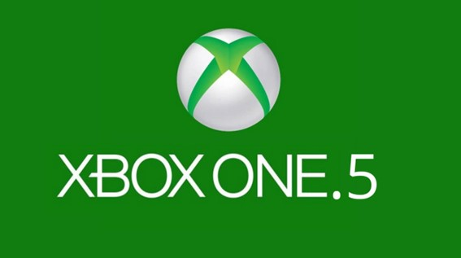

Phil Spencer preferiría permitir actualizar el hardware de Xbox One a una supuesta "Xbox One.5"
Tras las conferencias del Build 2016 centradas en las novedades y mejoras que se ofrecerán por parte de Microsoft de cara a este mismo año, Phil Spencer, el máximo responsable de la marca Xbox, pudo compartir algunas palabras con la prensa y respondió a varias de las preguntas relacionadas con Xbox One, y era inevitable que se le preguntara sobre PlayStation 4.5.
A través del medio Gamespot se ha dado a conocer la opinión del directivo de Microsoft sobre una supuesta Xbox One.5, refiriendose a una versión de su consola que ofreciera algo similar a los prototipos de la llamada PlayStation 4.5, y Spencer no se muestra partidario a sacar una nueva consola mejorada, sino de que podamos actualizar nosotros mismos la que ya tenemos.